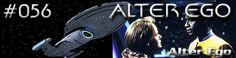
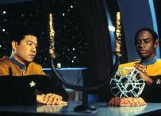
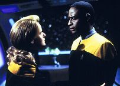
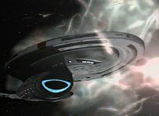
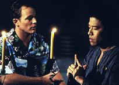
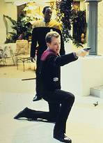

|
Voyager
Temporada 3

Análise do episódio por
Daniel Sasaki


|

|
MANCHETE
DO EPISÓDIO Data Estelar: 50460.3. A tripulação da Voyager intriga-se pelo comportamento atípico de uma nebulosa. Enquanto a estudam, Kim pede a Tuvok que lhe ensine a suprimir suas emoções. O alferes confessa ter se apaixonado por uma personagem do holodeck chamada Marayna. Tuvok aconselha a Kim que deixe de vê-la, já que é insustentável um relacionamento com um programa de computador. Kim concorda.    Reastreando o sinal até a sua fonte, Tuvok se transporta para uma estação espacial dentro da nebulosa. Lá, conhece a verdadeira Marayna, uma alienígena humanóide solitária que controla a atividade plasmática para o benefício dos habitantes de seu planeta-natal. A moça ameaça destruir a Voyager se Tuvok não ficar com ela, mas ele explica que um relacionamento baseado na sobrevivência da nave não atenderia às expectativas dela. Aceitando a lógica da situação, Marayna permite que ele e a Voyager partam.
"Alter Ego" é o primeiro episódio de Voyager dirigido por Robert Picardo, o Doutor. Porém, o ator em si mal aparece, revelando-se mesmo apenas no estranho senso de humor da história. Até a parte final, o roteiro é bastante parado, parece se restringir a uma aventura no holodeck sem grande diferencial das demais e enfocando Harry Kim, o personagem mais "sem sal" da série. É engraçado ver que até Tuvok rouba suas mulheres. Quem sabe ele não cresceria mais como personagem se admitisse sua paixão por Tom Paris... Ainda falando de Paris, Alexander Enberg --o jovem alferes Vulcano chamado Vorik--, aparece novamente na série, como um rival de Tom na luta pela atenção de B'Elanna. Vorik não parece ser um Vulcano típico; adquire gírias humanas, veste-se com camisas havaianas festivas e em momento algum parece desprovido de emoções.  Sobre o roteiro em si, a princípio Harry Kim parece ser o personagem da semana. Mas essa percepção vai mudando depois da segunda metade do episódio. Tuvok passa a ser o centro das atenções. A história tenta mostrar um pouco de seu universo, que é separado daquele em que vivem os demais tripulantes da Voyager. A cena em que Marayna explica a personalidade de Tuvok a ele próprio em poucas palavras foi muito boa, enriquecida também pelo olhar incrédulo e perturbado do Vulcano, que precisou até se sentar. Analisado com "lógica impecável" por um holograma? Agora o seu sarcasmo direcionado a Kim não parece muito apropriado. A verdade é que Tuvok seja talvez o oficial que mais precise de um divã. Ele sempre vai ser o mais velho de todos, visto pelos Maquis como um traidor e pelos da Frota como o sujeito mais irritante a bordo. Desde que Janeway se aproximou de Chakotay, ela não o tem procurado muito para conselhos, o que o isolou ainda mais.  Interessante também foi a citação à Enterprise-D e à Nova Geração. Quando Voyager procura estabelecer um senso de continuidade, parece fazê-lo com Jornada num geral, e não em um tipo de coerência interna. No fim, pode-se dizer que muito do que Tuvok diz à verdadeira Marayna poderia ser usado por ele próprio. Ele não é muito lógico em sua conduta. Vive em situação semelhante, mas não põe em prática aquilo que diz com tanta objetividade a outros.
Tuvok - "You are in love with
a computer sub-routine?" Paris - "Everybody falls for
a holodeck character sometime."
Dirigido
por: Robert Picardo Elenco: Kate Mulgrew como
Kathryn Janeway Elenco convidado: |